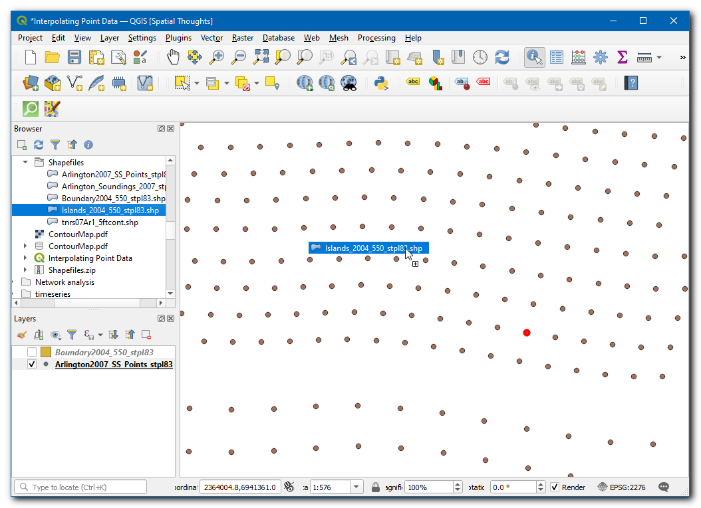
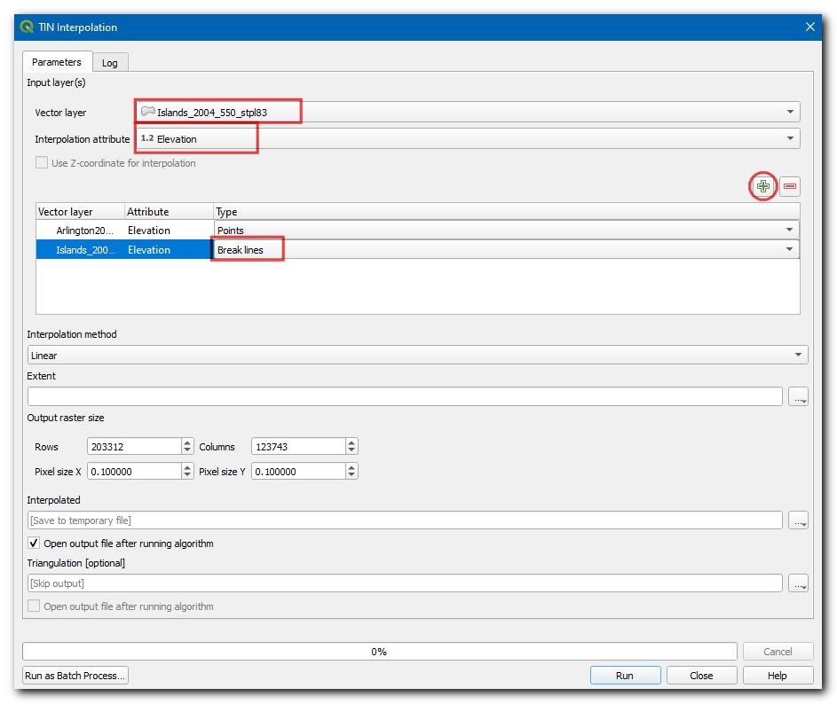
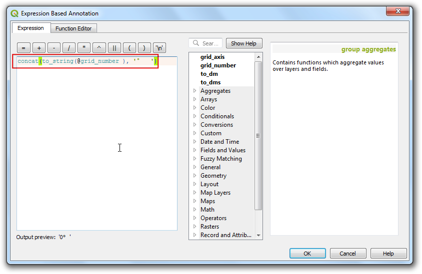
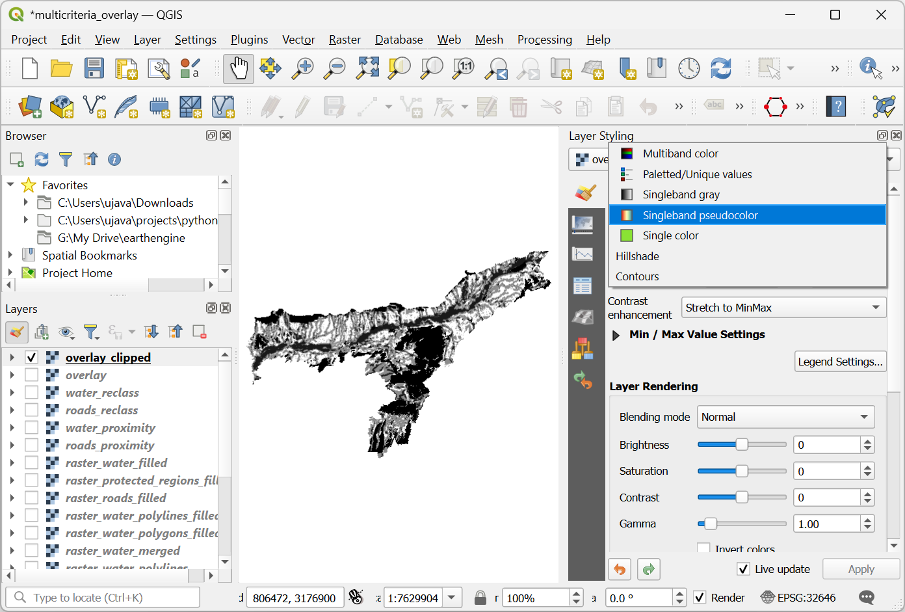
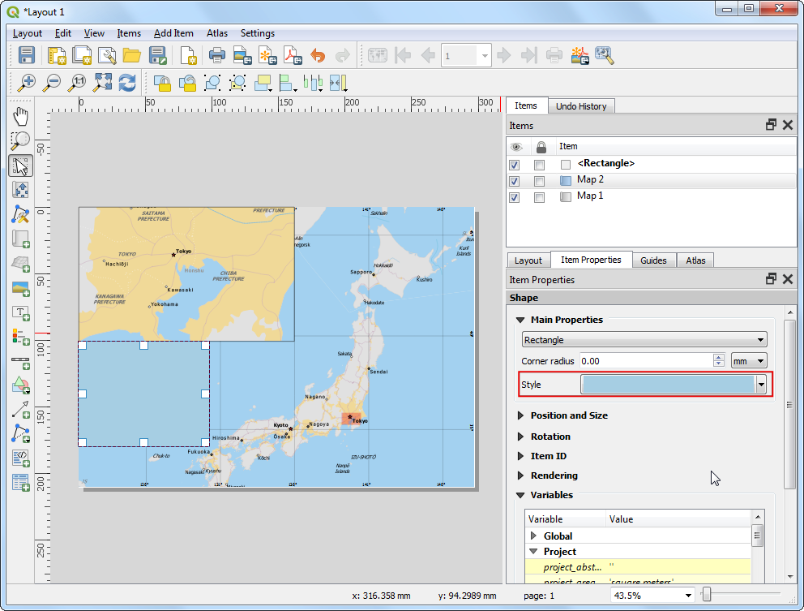

Análisis de Sobreposición Multicriterio (QGIS3)¶
El análisis de sobreposición ponderado multicriterio es el proceso de asignación de áreas en base a una variedad de atributos que las áreas seleccionadas deberían poseer. A pesar de que esta es una operación común en SIG, es mejor realizada en el espacio ráster usando un enfoque basado en cuadrícula (grid).
Nota
Sobreposiciones Vector vs Ráster
Puede hacer análisis de sobreposición sobre capas vector usando herramientas de geoprocesamiento como área de influencia, disolver, diferencia e intersección. Este método es idea si quisiera una respuesta binaria adecuado/no-adecuado y si estuviera trabajando con un puñado de capas.
Trabajar en el espacio raster le da una clasificación de la adecuación - no sólo el sitio más adecuado. También le permite combinar fácilmente cualquier cantidad de capas de entrada y asignar diferentes pesos a cada criterio. En general, éste es el enfoque preferido para conveniencia de sitio.
Este tutorial recorre el flujo de trabajo típico para realizar un análisis de conveniencia de sitio - convirtiendo datos vector fuente a los rasters apropiados, re-clasificándolos y realizando las operaciones matemáticas.
Vista general de la tarea¶
En este tutorial, identificaremos las áreas convenientes para desarrollo, que son
Cercanas a caminos, y
Alejadas de cuerpos de agua, y
No están en regiones protegidas.
Obtener los datos¶
Usaremos capas de datos vector de OpenStreetMap (OSM). OSM es una base de datos global de datos de mapa base libremente disponible. Geofabrik provee archivos shape actualizados diariamente de los conjuntos de datos OpenStreetMap.
Estaremos usando las capas de datos OSM para el estado de Assam en India. Los archivos shape de la India de Geofabrik fueron descargados, recortados al límite de estado y empaquetados en un sólo archivo GeoPackage. Puede descargar una copia del geopackage del enlace abajo:
Fuente de Datos: [GEOFABRIK]
Procedimiento¶
Navegue al archivo
assam.gpkgdescargado en el Navegador QGIS. Expándalo y arrastre cada una de las 5 cadas individuales de datos a la pantalla de mapa. Verá que carga las capasboundary,roads,protected_regions,water_polygonsywater_polylinesen el panel Capas.

El primer paso en el análisis de superposición es convertir cada capa de datos en ráster. Una consideración importante es que todos los rásters deben tener la misma extensión. Utilizaremos la capa
boundarycomo extensión para todos los raster. Vaya a . Busque y localice el algoritmo . Haga doble clic para ejecutarlo.

En el diálogo Rasterizar (vectorial a ráster), seleccionar
roadscomo la Capa de entrada. Crearemos un ráster de salida donde los valores de píxel son 1 donde haya un camino y 0 donde no haya caminos. Ingrese1como el Un valor fijo para quemar. Las capas de entrada están en un SRC proyectado con metros como unidad. SeleccioneUnidades georeferenciascomo las Unidades de tamaño del ráster de salida. Estableceremos la resolución del ráster de salida en 15 metros. Seleccione15tanto para la Width/Resolución horizontal como la Height/Resolución vertical. A continuación, clic en el botón … junto a Extensión de salida y seleccioneboundarypara Usar extensión para.

Desplácese más abajo y haga clic en el botón de flecha de la Asignar un valor nodata específico a las bandas de salida.

Ese campo debería estar ahora en
Not set. Esto es importante porque cuando la calculadora raster (que usaremos más adelante) encuentra un píxel con valor nodata en cualquier capa, establece la salida a nodata también, lo que resulta en una salida incorrecta.

Desplácese hacia abajo hasta encontrar la Parámetros Avanzados y seleccione el perfil
Alta Compresiónpara aplicar la compresión. Esto generará un archivo raster comprimido de menor tamaño después de ejecutar la herramienta. La aplicación de la compresión sin pérdidas es muy recomendable cuando se trabaja con datos ráster.

Establezca el ráster de salida :guilabel: Rasterizado como
raster_roads.tify haga clic en :guilabel: Ejecutar`.

Una vez que termine el procesamiento, verá una nueva capa raster_roads cargada en el panel Capas. El estilo predeterminado mostrará píxeles con caminos en blanco y otros en negro. También queremos convertir otras 4 capas vectoriales a ráster. En vez de ejecutar el algoritmo rasterizar uno por uno, podemos usar la funcionalidad incorporada de procesamiento por lotes para convertirlos a todos a la vez. Vea el tutorial batch-processing para aprender más acerca del procesamiento por lotes. Clic-derecho al algoritmo
Rasterizar (vectorial a ráster)y seleccione Ejecutar como Proceso por Lote.

En el diálogo Proceso por Lote, clic el botón … en la primera fila de la columna Capa de entrada. Seleccione las capas
boundary,protected_regions,water_polygonsywater_polylinesy clic en Aceptar.

Nota
Esta opción Parámetros avanzados no está disponible cuando se ejecuta el algoritmo por lotes. Tendrá que repetir los pasos anteriores para todas las capas y omitir los pasos 8 a 12 para aplicar la compresión en todas las salidas :guilabel: Rasterizado.
Llene los parámetros con los mismos valores que usamos en la capa de caminos. Después de llenar la primera fila del parámetro, use el botón para agregar los mismos valores para todas las capas.

En la última columna Rasterized, clic el botón … en la primera fila. Seleccione
Llenar con valores de parámetrospara el Modo autorellenar yCapa de entradapara Parámetro a usar. Clic en Aceptar.

Navegue a un directorio en su computador y nombre la capa como
raster_. El interfaz de procesamiento por lote autocompletará el nombre con el nombre de la capa y llenará todas las filas. Asegúrese que la caja Cargar las capas al completarse esté marcada y clic en Aceptar.

Una vez que termine el procesamiento, tendrá 4 nuevas capas ráster cargadas en el panel Capas. Notará que tenemos 2 capas relacionadas con agua - ambas representan agua. Podemos fusionarlas para tener una sola capa que representa áreas de agua en la región. Busque y localice el algoritmo menuselection:Análisis ráster –> Calculadora ráster en la Caja de herramientas de Proceso. Doble-clic para iniciarlo.

Ingrese la siguiente expresión en la caja Expresión. Puede hacer clic en la capa apropiada en la caja Capas para auto insertar los nombres de capas. Esta expresión significa que queremos sumar los valores de píxeles en la primera banda de ambos ráster de agua. Clic en el botón … junto a Capa(s) de referencia y seleccion
raster_water_polygonscomo la capa de referencia. Nombre a la salida comoraster_water_merged.tify clic en Ejecutar.
"raster_water_polygons@1" + "raster_water_polylines@1"
El ráster resultante fusionado tendrá píxeles con valor 1 para todas las áreas con agua. Pero notará que hay algunas regiones donde había tanto un polígono de agua como una polilínea agua. Esas áreas tendrán píxeles con valor 2 - lo que no es correcto. Podemos corregir esto con una expresión simple. Abra de nuevo el algoritmo .

Ingrese la siguiente expresión que asignará el valor 1 que coincide la expresión y 0 donde no coincide. Clic el botón guilabel:… junto a Capa(s) de referencia y seleccione la capa
raster_water_merged. Nombre la salida comoraster_water.tify clic en Ejecutar.
"raster_water_merged@1" > 0
La capa resultante
raster_waterahora tiene píxeles con sólo valores 0 y 1.

Ahora tenermos capas que representan píxeles camino y agua, podemos generar rásters de proximidad. Estos son también conocidos como distancias Euclideanas - donde cada píxel en el ráster de salida representa la distancia al píxel más cercano en el ráster de entrada. Este ráster resultante luego puede ser usado para determinar áreas apropiadas que están dentro de cierta distancia de la entrada. Busque y localice el algoritmo . Doble-clic para iniciarlo.

En el cuadro de diálogo :guilabel: Proximidad (Distancia Raster), seleccione
raster_roadscomo :guilabel: Capa de entrada. SeleccioneCoordenadas georreferenciadascomo Unidades de distancia. Como las capas de entrada están en un SRC proyectado con metros como unidades, introduzca5000(5 kilómetros) como Distancia máxima a generar`. Asegúrese de que el valor de Nodata a utilizar para el ráster de proximidad de destino esNot set.

Puede expandir la etiqueta :guilabel: Parámetros Avanzados y seleccionar el perfil
Alta Compresiónpara aplicar la compresión. Asigne al archivo de salida el nombreroads_proximity.tify haga clic en Ejecutar.

Nota
Este proceso puede tardar hasta 15 minutos en ejecutarse. Se trata de un algoritmo de cálculo intensivo que necesita calcular la distancia de cada píxel de la trama de entrada, y nuestra entrada contiene más de mil millones de píxeles.
Una vez que se complete el procesamiento, se agregará una nueva capa
roads_proximityal panel Capas. Para visualizarla mejor, cambiemos el estilo predeterminado. Clic en el botón Abrir el panel de Estilo de Capa en el panel Capas. Cambie el valor Max a5000bajo Gradiente de color.

Repita el algoritmo Proximidad (Distancia de Ráster) para la capa
raster_watercon los mismos parámetros y nombre la salida comowater_proximity.tif.

Una vez que finalice el procesamiento, puede aplicar el estilo similar como antes para visualizar mejor los resultados. Si hace clic por ahí en la capa resultante, verá que es un continuo de valores de 0 a 5000. Para usar este ráster en un análisis de sobreposición, debemos primero reclasificarlo para crear valores discretos. Abra de nuevo el algoritmo .

Queremos dar un puntaje mayor a píxeles que están cerca de caminos. Así que usemos el siguiente esquema.
0-1000m –> 100
1000-5000m –> 50
>5000m –> 10
Ingrese la siguiente expresión que aplica el criterio de arriba en la entrada. Clic en el botón … junto a Capa(s) de referencia y seleccione la capa
roads_proximity. Nombre la salida comoroads_reclass.tify clic Ejecutar.100*("roads_proximity@1"<=1000) + 50*("roads_proximity@1">1000)*("roads_proximity@1"<=5000) + 10*("roads_proximity@1">5000)
Una vez que finalice el proceso de reclasificación, se agregará una nueva capa
roads_reclassal panel Capas. Esta capa sólo tiene 3 valores diferentes, 10, 50 y 100 que indican la conveniencia relativa de los píxeles con respecto a la distancia de los caminos. Abra de nuevo el algoritmo .

Repita el proceso de reclasificación para la capa
water_proximity. Aquí el esquema será a la inversa, donde los píxeles que están más lejos del agua deberían tener un puntaje mayor.
0-1000m –> 10
1000 -5000m —> 50
>5000m –> 100
Ingrese la siguiente expresión que aplica los criterios de arriba en la entrada. Clic el botón … junto a Capa(s) de referencia y seleccione la capa
water_proximity. Nombre la salida comowater_reclass.tify clic en Ejecutar.100*("water_proximity@1">5000) + 50*("water_proximity@1">1000)*("water_proximity@1"<=5000) + 10*("water_proximity@1"<1000)
Ahora estamos listos para hacer el análisis final de sobreposición. Recuerde que nuestros criterios para determinar sostenibilidad es como sigue - cerca a caminos, lejos de agua y fuera de una región protegida. Abra . Ingrese la siguiente expresión que aplica estos criterios. Note que estamos multiplicando el resultado con
raster_boundary@1al final para descartar los valores de píxel fuera del límite del estado. Clic en el botón … junto a Capa(s) de referencia y seleccioneraster_boundary. Nombre la salida comooverlay.tify clic en Ejecutar.
("roads_reclass@1" + "water_reclass@1")*("raster_protected_regions@1" != 1 )*"raster_boundary@1"
Nota
En este ejemplo, estamos dando peso igual tanto a proximidad de camino como agua. En un escenario de la vida real, puede tener múltiples criterios con diferente importancia. Puede simular eso multiplicando los rásters con pesos apropiados en la expresión de arriba. Por ejemplo, si la proximidad a caminos es dos veces más importante que la proximidad a agua, puede multiplicar el ráster roads_reclass por 2 en la expresión de arriba.
Una vez que termine el proceso, el ráster resultante
overlayse agregará al panel Capas. Los valores de píxel en este ráster van del 0 a 200 - donde 0 es el área menos apropiada y 200 es la más apropiada para desarrollo. Clic en el botón Abrir el panel de Estilo de Capa en el panel Capas.

Seleccione el representador
pseudocolor_banda_únicay la rampa de colorEspectral. Clic Clasificar para aplicar la rampa de color al ráster.

Clic en los valores predeterminados de etiqueta junto a cada color e ingrese las etiquetas apropiadas. Las etiquetas también aparecerán como la leyenda bajo la capa
overlay.

Las capas ráster son cuadrículas rectangulares. Queremos esconder los píxeles fuera de los límites del estado. Una manera fácil de alcanzar esto es aplicando unos
Polígonos Invertidosrepresentados en la capa vector de límite. Deslice hacia abajo en el panel Capas y ubique la capaboundary. SeleccionePolígonos Invertidoscomo el representador y deje las otras opciones predeterminadas.

Para que se muestre el efecto del representador, es necesario estar en la parte de arriba de la Tabla de Contenido. Haga clic-derecho a la capa
boundaryy seleccione Mover al Tope.

Marque la capa y la pantalla de mapa se actualizará para mostrar el ráster
overlayrecortado a la capaboundary. Esta es la salida final que muestra áreas dentro del estado que son apropiadas para desarrollo.

If you want to give feedback or share your experience with this tutorial, please comment below. (requires GitHub account)